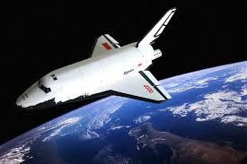

Історія Космонавтики
Початки. Ідеї та концептуальні проєкти
1881 року Микола Кибальчич — винахідник і революціонер-народник українського походження, запропонував схему першого у світі реактивного літального апарата. В проєкті Кибальчич обґрунтував вибір робочого тіла і джерела енергії апарата, висунув ідею про можливість застосування броньованого пороху для реактивного двигуна і про необхідність забезпечення програмованого режиму горіння пороху, розробив пристрої для подачі палива і регулювання, способи запалювання. Подачу порохових шашок в камеру згорання Кибальчич планував забезпечувати за допомогою автоматичних годинникових механізмів. Досліджуючи питання щодо стійкості польоту, Кибальчич відмітив, що стабілізувати апарат можна відповідним розподілом мас і за допомогою крил-стабілізаторів. В проєкті досліджене питання про гальмування апарата при спуску. В кінці пояснювальної записки Кибальчич виказав думку про те, що успіх у вирішенні проблеми залежить від вибору співвідношення між масою корисного вантажу, габаритами порохових шашок і геометричними розмірами камери згорання двигунів. Страчений за замах на імператора Олександра II.

1903 року російський учений Ціолковський Костянтин Едуардович висунув ідею про використання ракет для космічни польотів. Він у загальних рисах (на рівні концептуальних рішень) спроєктував ракету для міжпланетних сполучень.
Німецький учений Герман Оберт у 1920-ті роки також виклав принципи міжпланетного польоту.
Український вчений-винахідник Кондратюк Юрій Васильович у січні 1929 року в Новосибірську за власний кошт випустив книгу «Завоювання міжпланетних просторів».
Перші польоти до космосу
З цією невідомою безкрайньою територією вже існує чимало загадкових випадків. Найбільш відомий факт залишається той, що першим космонавтом був Юрій Гагарін. Саме він у 1961 році 12 квітня здійснив політ навколо Земної поверхні. З того часу, цей день відзначають як День Космонавтики. Це дуже значущий день для усього людства, адже ми перейшли кордони своєї планети й зрозуміли, що поза нею теж існує всесвіт.
16 червня 1963 року до космосу полетіла перша жінка-космонавт Валентина Терешкова. А першою тваринкою була собака на ім’я Лайка. Вона здійснила свій політ ще у 1957 році.
Відтоді, пройшло багато часу й в сучасному світі людство має всі можливості для детального вивчення космічного простору. Але все ж ця територія залишається ще невідомою та розширеною для вивчення.
Подальший розвиток
Після польоту Гагаріна почалася справжня революція в історії космонавтики. Вже 6 серпня 1962 року Герман Степанович Тітов здійснив політ та перебував у космосі цілу добу. Й того ж року до космосу відправився перший американський астронавт Джон Гленн та провів перший орбітальний політ.
7 березня 1962 року був запущений перший штучний супутник Землі для проведення досліджень Сонця. На сьогодні досі невідомий рівень впливу на Землю цієї важливої частини космосу.
1964 року починається вивчення Місяця й 31 липня того ж року до Європейської організації з космічних досліджень передаються перші зображення місячної поверхні.
18 березня 1965 року проходить вихід людини у відкритий космос. Його здійснив радянський астронавт Олексій Леонов з корабля-супутника «Схід-2» та перебував там протягом 12 хвилин.
16 липня 1969 року, стартував космічний корабель «Аполлон-11», який успішно доставив американських космонавтів на поверхню Місяця. Подорож від Землі до Місяця тривала приблизно 76 годин. Це була перша висадка людини на Місяць.
Це були найбільш значущі події, які поклали початок цілій науці з вивчення космічного простору. Після цього запущено не один корабель, супутник. Споруджено безліч космічних станцій.
Найважливіші етапи освоєння космосу
-
1957 року під керівництвом Корольова створено першу у світі міжконтинентальну балістичну ракету Р-7, яка того ж року була використана для запуску першого у світі штучного супутника Землі.
-
4 жовтня 1957 — запущено перший штучний супутник Землі «Супутник-1». (СРСР).
-
3 листопада 1957 — запущено другий штучний супутник Землі «Супутник-2», який вперше вивів у космос живу істоту, — собаку Лайку. (СРСР).
-
4 січня 1959 — станція «Луна-1» пройшла на відстані 6000 км від поверхні Місяця і вийшла на геліоцентричну орбіту. Вона стала першим у світі штучним супутником Сонця. (СРСР).
-
14 вересня 1959 — станція «Луна-2» вперше у світі досягла поверхні Місяця у районі Моря Ясності поблизу кратерів Аристид, Архімед і Автолік, і доставила вимпел з гербом СРСР. (СРСР).
-
4 жовтня 1959 — запущено АМС «Луна-3», яка вперше у світі сфотографувала невидимий з Землі бік Місяця. Також під час польоту вперше у світі було на практиці здійснено гравітаційний маневр. (СРСР).
-
19 серпня 1960 — здійснено перший в історії орбітальний політ у космос живих істот з успішним поверненням на Землю. На кораблі «Супутник-5» орбітальний політ здійснили собаки Білка та Стрілка. (СРСР).
-
12 квітня 1961 — здійснено перший політ людини у космос (Ю. Гагарін) на кораблі «Восток-1». (СРСР).
-
12 серпня 1962 — здійснено перший у світі груповий космічний політ на кораблях «Восток-3» і «Восток-4». Максимальне зближення кораблів становило близько 6,5 км. (СРСР).
-
16 червня 1963 — здійснено перший у світі політ у космос жінки-космонавтки (Валентина Терешкова) на космічному кораблі «Восток-6». (СРСР).
-
12 жовтня 1964 — здійснив політ перший у світі багатомісний космічний корабель «Восход». (СРСР).
-
18 березня 1965 — здійснено перший в історії вихід людини у відкритий космос. Космонавт Олексій Леонов здійснив вихід у відкритий космос з корабля «Восход-2». (СРСР).
-
3 лютого 1966 — АМС «Луна-9» здійснила першу у світі м'яку посадку на поверхню Місяця, були передані панорамні знімки Місяця. (СРСР).
-
1 березня 1966 — станція «Венера-3» вперше досягла поверхні Венери, куди доставила вимпел СРСР. Це був перший у світі переліт космічного апарата з Землі на іншу планету. (СРСР).
-
3 квітня 1966 — станція «Луна-10» стала першим штучним супутником Місяця. (СРСР).
-
30 жовтня 1967 — виконано перше стикування двох безпілотних космічних апаратів «Космос-186» і «Космос-188». (СРСР).
-
15 вересня 1968 — перше повернення космічного апарата (Зонд-5) на Землю після обльоту Місяця. На борту знаходились живі істоти: черепахи, плодові мухи, черв'яки, рослини, насіння, бактерії. (СРСР).
-
16 січня 1969 — виконано перше стикування двох пілотованих космічних кораблів «Союз-4» і «Союз-5». (СРСР).
-
21 липня 1969 — перша висадка людини на Місяць (Н. Армстронг) в рамках місячної експедиції корабля «Аполлон-11», що доставив на Землю, серед іншого і перші проби місячного ґрунту. (США).
-
24 вересня 1970 — станція «Луна-16» здійснила забір і наступну доставку на Землю (станцією «Луна-16») зразків місячного ґрунту. (СРСР). Вона також є першим безпілотним космічним апаратом, який доставив на Землю проби породи з іншого космічного тіла (тобто, у цьому випадку, з Місяця).
-
17 листопада 1970 — м'яка посадка і початок роботи першого у світі напівавтоматичного самохідного апарата, дистанційно керованого з Землі: «Луноход-1». (СРСР).
-
15 грудня 1970 — перша у світі м'яка посадка на поверхню Венери: «Венера-7». (СРСР).
-
19 квітня 1971 — запущено першу орбітальну станцію «Салют-1». (СРСР).
-
13 листопада 1971 — станція «Марінер-9» стала першим штучним супутником Марса. (США).
-
27 листопада 1971 — станція «Марс-2» вперше досягла поверхні Марса. (СРСР).
-
2 грудня 1971 — перша м'яка посадка АМС на Марс: «Марс-3». (СРСР).
-
3 березня 1972 — запуск першого апарата, який згодом залишив межі Сонячної системи: Піонер-10. (США).
-
20 жовтня 1975 — станція «Венера-9» стала першим штучним супутником Венери. (СРСР).
-
жовтень 1975 — м'яка посадка двох космічних апаратів «Венера-9» і «Венера-10» і перші у світі фотознімки поверхні Венери. (СРСР).
-
12 квітня 1981 — перший політ першого багаторазового транспортного космічного корабля «Колумбія». (США).
-
20 лютого 1986 — виведення на орбіту базового модуля орбітальної станції «Мир».
-
7 грудня 1995 — станція «Галілео» стала першим штучним супутником Юпітера. (США).
-
20 листопада 1998 — запуск першого блока Міжнародної космічної станції. (Виробництво і запуск — Росія, власник — США).
-
24 червня 2000 — станція «NEAR Shoemaker» стала першим штучним супутником астероїда (433 Ерос). (США).
-
30 червня 2004 — станція «Кассіні» стала першим штучним супутником Сатурна. (США).
-
4 жовтня 2004 — учасники проєкту Tier One, що розробили повітряно-космічну систему SpaceShipOne, виграли приз Ansari X Prize (запропонований для першої недержавної організації, що здійснить два пілотованих суборбітальних космічних польоти на одному багаторазовому космічному апараті протягом двох тижнів).
-
15 січня 2006 — станція «Стардаст» доставила на Землю зразки комети Вільда 2. (США).
-
17 березня 2011 — станція «MESSENGER» стала першим штучним супутником Меркурія.
-
12 листопада 2014 (о 17:35 за київським часом) — космічний апарат Філе(Philae) виконав першу в історії м'яку посадку на комету.